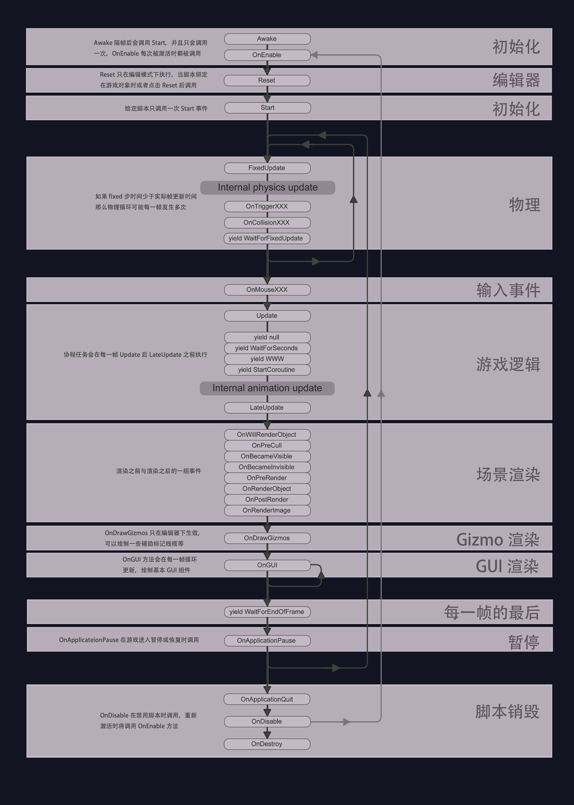

unity脚本生命周期
摘自unity官方手册：https://docs.unity3d.com/2019.3/Documentation/Manual/ExecutionOrder.html

场景第一次加载
当 场景 开始时会调用这些函数（场景中每个对象执行一次）
Awake：
此函数始终会在任何 Start 函数之前以及预制件（prefab）之后实例化（如果 GameObject 在启动期间处于非活动状态，则在激活之前不会调用 Awake。）OnEnable：
（仅在 Object 处于活动状态时调用）在启用对象后立即调用此函数。在创建 MonoBehaviour 实例时会发生这种情况，例如加载关卡时或者 游戏 中的脚本组件实例化。OnLevelWasLoaded
执行此函数以通知游戏已加载新关卡。请注意，对于添加到场景中的对象，所有 脚本 的 Awake 和 OnEnable 函数中的任何一个，在调用Start，Update等之前调用。当然，在游戏过程中实例化对象时，不能强制执行此操作。
更新顺序
当你跟踪游戏逻辑和交互、动画、相机和位置等，您可以使用一些不同的事件。常见模式是在 Update 函数中执行大多数任务，但也可以使用其他函数。
FixedUpdate：
通常比 Update 更频繁地调用 FixedUpdate。如果帧速率低，则可以每帧调用多次，如果帧速率高，则可以不在帧之间调用。所有物理计算和更新在 FixedUpdate 之后立即发生。在 FixedUpdate 中应用移动计算时，您不需要将您的值乘以 Time.deltaTime。这是因为在可靠的定时器上调用 FixedUpdate，与帧速率无关。Update：
每帧调用一次 Update。它是帧更新的主要函数。LateUpdate：
在 Update 完成后，每帧调用一次 LateUpdate。在 LateUpdate 开始时，将在 Update 中执行的任何计算都已完成。LateUpdate 的一个常见用途是使用以下第三人称相机。如果您使角色移动并在 Update 内转向，您可以在 LateUpdate 中执行所有相机移动和旋转计算。这将确保角色在摄像机跟踪其位置之前完全移动。
渲染
OnPreCull：
在相机剔除场景之前调用。剔除决定哪些对象对相机可见。在剔除之前调用 OnPreCull。
OnBecameVisible / OnBecameInvisible：
当对象对任何摄像机可见 / 不可见时调用。
OnWillRenderObject：
如果对象可见，则为每个摄像机调用一次。
OnPreRender：
在相机开始 渲染 之前调用场景。
OnRenderObject：
在完成所有常规场景渲染后调用。您可以使用 GL 类或 Graphics.DrawMeshNow 来绘制自定义几何体。
OnPostRender：
在相机完成场景渲染后调用。
OnRenderImage：
在场景渲染完成后调用以允许对图像进行后处理，请参阅 后处理效果。
OnGUI：
响应GUI事件，每帧调用多次。首先处理 Layout 和 Repaint 事件，然后为每个输入事件处理 Layout 和 keyboard / mouse 事件。
OnDrawGizmos：
用于绘制 Gizmos 在 场景视图 中用于可视化目的。